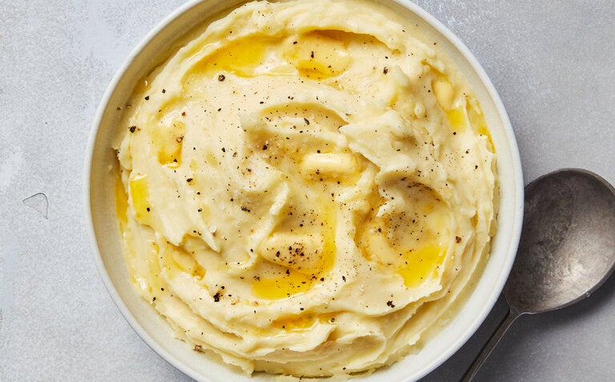

Mashed potatoes

If you love good, old-fashioned mashed potatoes, this is the perfect recipe
Learn how to make mashed potatoes that come out smooth, creamy and delicious every time.
- Prep time: 35 mins
- Servings: 4
Ingredients:
- 2 pounds baking potatoes, peeled and quartered
- 3 cloves garlic, peeled or to taste (optional)
- 1 cup milk
- 2 tbsp butter
- Salt and ground black pepper to taste
Directions
- Bring a large pot of salted water to a boil. Add potatoes and garlic, lower heat to medium, and simmer until potatoes are tender, 15 to 20 minutes.
- When the potatoes are almost finished, heat milk and butter in a small saucepan over low heat until butter is melted.
- Drain potatoes and return to the pot. Slowly add warm milk mixture, blending it in with a potato masher or electric mixer until potatoes are smooth and creamy. Season with salt and pepper.
Home
Return to top